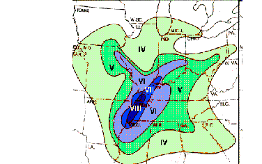

Article # 58
What is the chance of a major earthquake, like the earthquakes that hit the New Madrid Seismic Zone during the winter of 1811 and 1812, happening in the Arkansas area within the near future?


A2: Physical
Geography: Earthquakes
“Earthquakes in
Arkansas”
By Richard
Benson, Abbi Hendricks, and Ryan Stubenrauch (The Tectonic Trio)
Principles of
Geography: Geog 1305, Section 2519
Prepared: October
13, 1998
What is the chance of a major earthquake,
like the earthquakes that hit the New Madrid Seismic Zone during the winter of
1811 and 1812, happening in the Arkansas area within the near future?
Future is a relative term
but for our project we agreed that a period of fifteen years would suffice as a
good “near future” timetable. In this
research paper we will cover the following subjects to better explain how we
determined our answer for the above-proposed question:
What is an earthquake and how does it work?
How
are earthquakes predicted?
What happened in the New Madrid Seismic Zone
during the years of 1811 and 1812?
What is the chance of a large earthquake (6.0
or larger) happening in the Arkansas area?
What areas of Arkansas would most likely to
be effected if a large earthquake
were to happen in the New Madrid Seismic Zone.
By answering these five questions we hope we
are able to best explain how we were able to determine the answer for the
overall question, “What is the chance of a major earthquake, like the
earthquakes that hit the New Madrid Seismic Zone during the winter of 1811 and
1812, happening in the Arkansas area within the near future?”
What is an earthquake and how does it work?
An
earthquake for all intents and purposes is actually a sudden release in
strained or potential energy when rocks under the surface of the earth are
stressed to the point of almost breaking and then they shift abruptly along a
fault zone, such as the New Madrid Fault zone.
Actually there are three types of earthquakes: tectonic, volcanic, and artificially
produced (Encarta 1994). The
earthquakes that occurred in the New Madrid Seismic Zone are a rare form of
tectonic earthquakes. They are caused
by forces tearing apart the middle of the North America tectonic plate. There are times when faults are visible on
the surface of the earth, like parts of the San Andreas Fault in
California. However, most faults are
not visible on the surface of the earth, this is the case with the New Madrid
Fault. Earthquakes predominately occur
along faults where tectonic activity is greatest (Getis, Getis and Fellmann
70-71).
A
device called a seismograph measures an earthquake. Crude forms of seismographs have been found to be in existence
during the T’ang dynasty in China around, 618 to 762 b.c.e. (Fields, Barber and
Riggs 454-459). A seismograph is an
instrument that records seismic waves, the vibrations caused by an
earthquake. The magnitude of an
earthquake is gauged by what is called the Richter scale. The Richter scale is a chart which assigns
numbers of magnitude to an earthquake, with each increment of a whole number
signifying an increase of ten times.
Below is a chart (Fig 1.1), which gives a brief description of
earthquake magnitudes (Getis, Getis and Fellmann 70-71).
Figure 1.1 (see notes)
|
Magnitude |
Characteristic Effects of Earthquakes
Occurring Near the Earth’s Surface |
|
0 |
Not Felt |
|
1 |
Not Felt |
|
2 |
Not Felt |
|
3 |
Felt by some |
|
4 |
Windows rattle |
|
5 |
Windows break |
|
6 |
Poorly constructed buildings destroyed;
others are damaged |
|
7 |
Widespread damage; steel bends |
|
8 |
Nearly total damage |
|
9 |
Total destruction |
How are earthquakes predicted?
Scientists announced in 1979 that they had learned to recognize some of
the signs that proceeded the earthquakes.
The two types of seismic waves that make up vibrations are “P” and “S”
waves. “P” waves travel faster than “S” waves and scientists have found that
the differences in the arrival times of the “P” and “S” waves usually decrease
before an earthquake occurs. This decrease
in both waves can begin happening months before the earthquake actually
occurs. The speeds then go back to
normal usually right before the earthquake occurs. In addition, scientists who study earthquakes and prediction of
earthquakes, called seismologists, have found that the longer that the
velocities are strange and erratic the stronger the earthquake.
Another theory in the world of
earthquake prediction is called the Delatancy theory. The theory states that small cracks in rock appear before an
earthquake due to stress. The Delatancy
theory explains other events that lead up to earthquakes to include the
uplifting of the rock beneath the surface before an earthquake. This rock uplifting is due to the fact that
the cracks increase in size (Mileti, Hutton and Sorensen 26-45).
Scientists
now try to predict the time, place and magnitude of an earthquake. The places earthquakes occur are recorded by
location and past seismicity. How long
abnormal vibrations occur and the size of the area where the abnormal behavior
occurs usually indicates the magnitude of the oncoming earthquake. Time is also predicted by the duration of
abnormal behavior and short term events including changes in magnitude field,
changes in water level of wells, and changes in animal behaviors (Penick
101). It has been found that some dogs,
in theory, have been able to alert of forthcoming earthquakes hours before the
earthquake occurs. It was noted that in
California many dogs became extremely agitated and began barking just before
many of the large earthquakes occurred in the area.
Unfortunately,
there is no way of accurately predicting when an earthquake is going to take
place. The best way that scientists
have found to predict when an earthquake is going to occur is by the seismic
zones earthquake cycle, or seismicity.
Essentially, scientists take the intervals between past earthquakes and
average them out to try and predict when future earthquakes will take
place. Scientist at the Center for
Earthquake Research and Information (CERI), have compiled the following chart
(Fig 1.2) which estimates what the potential for different magnitude
earthquakes, in the New Madrid Seismic zone are.
Figure 1.2 (see notes)
|
Magnitude |
Average Repeat Time (years) |
Probability in 15 y (%) |
Probability in 50 y (%) |
|
6.3 |
70 +or- 15 |
40-63 |
86-97 |
|
7.6 |
254 +or- 60 |
5.4-8.7 |
19-29 |
|
8.3 |
550 +or- 125 |
0.3-1.0 |
2.7-4.0 |
Accurate prediction or forecasting of earthquakes maybe possible
one day, but there is much more to be learned before that day comes.
What happened in the New Madrid Seismic Zone
during the years of 1811 and 1812?
During the winter of 1811 to 1812 the central
Mississippi Valley, where the present
day New Madrid Seismic zone is located, was
overwhelmed by three of the most devastatingly powerful earthquakes in the
history of the United States. At 2:00
a. m. Central Standard Time, on December 16, 1811 the first of three magnitude
8 earthquakes shook the region around the small town of New Madrid,
Missouri. This is where the New Madrid
Seismic zone inherits its name. The
survivors of the earthquakes reported the earth’s surface cracked and the
ground began to roll visibly.
Besides these three earthquakes 1,874 shocks
were recorded between December 16, 1811 and March 15, 1812. Eight of the shocks have been classed as
violent, ten as very severe, and thirty-five as moderate, yet alarming. The rest were between generally and barely
perceptible. People in Detroit and
Canada, 600 miles from the epicenter in New Madrid counted 9 shocks by early
April 1812. The area within which tremors
could be felt with out the aid of instruments approached one million square
miles. There have been reports that the
magnitude 8 New Madrid earthquakes even rang church bells as far away as
Boston, Mass (Penick 1-83). The following map (Map 1.1) shows the intensity of
the earthquake that occurred during the morning of December 16,1811 and the
areas that was effected. The
darker the area on the map indicates earthquake intensity felt in that region.
|
 |
The current of the Mississippi River was driven back upon its source
with the greatest velocity for several hours, in consequence of an elevation of
its bed. The first steamboat ever to
travel on the Mississippi River, the New Orleans, was making her maiden
voyage that night on the Mississippi.
She could not have picked a more dreadful night. The crew of the New Orleans moored on
an island that evening only to find that the island had disappeared by the next
morning. Although the boat was still
moored "all nature seemed running into chaos," said John Bradbury, a
Scottish naturalist aboard the ship (Penick 77).
Of course with all events in history stories
begin to get exaggerated. This has held
true with the story of how long the Mississippi Rivers current was
altered. It has changed from a couple
of hours to a couple of days depending on the accounts you are told. L. Don Leet, a Harvard University
seismologist attributed the tale of the river flowing upstream, "for three
days and three nights," to the, "hysteria and superstition of
on-the-spot reports."(Penick72).
He believed the legend had its origin in the tidal wave effect caused
locally by the caving in of the banks of the Mississippi River.
The damage was widespread throughout the
Mississippi valley during the winter of 1811 to 1812. People described hills disappearing and lakes were found in their
stead. Numerous lakes were elevated
above the ground which caused sand to be scattered in all directions, while
other places were sunken below the general level of the surrounding country,
without being covered with water, leaving a large impression in the earth.
One of the most devastating phenomenons
during this chaotic time was what scientists call sand boils or sand
blows. Sand boils are a form of
seismically induced liquefaction, which is a release in pressure from ground
water. What basically happens is ground
water that is trapped beneath the surface of the earth is under pressure. When a large earthquake happens if the
ground above the ground water is not very stable it may begin to give way to
the water pressure. Sand boils are when
the ground above the ground water is predominately made of sand. Once the sand gives, the water explodes to
the surface shooting both water and sand high into the air and over a large
area causing great amounts of damage to whatever lies in its path (Penick
37-38).
The earthquakes that occurred during the
winter of 1811 to 1812 were devastating to the people who lived in the
Mississippi Valley. Many people lost
their lives and homes. Fortunately the
Mississippi Valley was not densely populated between 1811 and 1812, so loss of
life and property was not that great.
4.
What is the chance of a large (6.0 or greater) earthquake happening in
the
Arkansas area in the near future?
Since cyclic prediction is the only way that
earthquakes can be predicted in advance of at least a year, our group used the
cyclic chart that was produced by the Center for Earthquake Research and
Information (CERI). By using that
probability chart from CERI we found that there is a 40 to 63 percent chance of
an earthquake, greater than magnitude six, occurring in the New Madrid Seismic
Zone. The probabilities for an
earthquake greater than a magnitude six occurring with in the New Madrid Zone
within 50 years are 83 to 97 percent.
Scientists from the United States Geological Survey have set
probabilities right at 90 percent for a large six to seven magnitude earthquake
to occur in this area within the next 50 years. We must remember that this is a very active fault, averaging over
200 earthquakes a year. The greatest
concern for us and our children in the near future, then, are the 6.0 to 6.5
magnitude earthquakes. Damaging
earthquakes in this intensity range are possible within our lifetimes but most
definitely within the lifetimes of our children. Two of these earthquakes have
occurred since 1811-1812, one in 1843, and another in 1895.
5.
What areas of Arkansas are most likely to be effected if a large
earthquake were to
occur in the New Madrid Seismic Zone?
The Northeastern portion of Arkansas, around
the Jonesboro area would be hit the worse.
Cities and towns like Jonesboro, New Port, Trumann, Batesville,
Pocahontas and Paragould would suffer the most damage, though shaking may be
felt as far away as Little Rock, Conway or even Hot Springs National Park. The Northeastern portion of Arkansas on the
west side of the Ozark Mountains would more than likely not feel anything since
the Ozarks act as a type of shield or absorption layer of ground.
6.
Summary.
What is the chance of a major earthquake, like the earthquakes that hit the New Madrid Seismic Zone during the winter of 1811 and 1812, happening in the Arkansas area within the near future? We determined that the is actually a better than 50 percent chance for a major earthquake with a magnitude of over 6.0 on the Richter scale to hit the Arkansas area within the next 15 years. Unfortunately, our children and grandchildren are actually more at risk than we are. We found that there is over a 90 percent chance of a large earthquake (6.0 or greater) occurring within the next fifty years. There is no accurate way of predicting these destructive forces of nature; all we can do is prepare for them(http:/www.ceri.memphis.edu).
The earthquakes that hit the New Madrid Seismic
zone during the winter of 1811 to 1812 caused little lose of life and damage to
property. The reason was that the area
was sparsely populated when the devastating earthquakes occurred. Now, the are is much more populated with
major cities like St. Louis, Missouri and Memphis, Tennessee lying directly in
the heart of the Mississippi River Valley.
In 1983, Arkansas, Illinois, Indiana,
Kentucky, Mississippi, Missouri, and Tennessee formed what is known as the
Central United States Earthquake Consortium or CUSEC. This agency has done much in the way of coordinating multi-state
planning for earthquake response, recovery, and preparedness. Most of the states, including Arkansas, in
the CUSEC have begun incorporating earthquake education into their curriculum
along with holding “Earthquake Awareness” weeks (USGS Fact Sheet 168-95). Hopefully the state of Arkansas will be
prepared for then next large New Madrid earthquake.
Bibliography
Notes
Figure 1.1 Getis, Arthur, and Judith Getis and Jerome Fellmann, Introduction to Geography. Page 70, 6th ed. Boston: McGraw-Hill, 1998.
Figure 1.2 Central Earthquake Research Institute, “New Madrid Fact Page”, 1998.
http://www.ceri.memphis.edu
Map 1.1 University of Chicago, “The Big One in the Midwest”, 1997. http://www.chicago.edu
Works Cited
Getis, Arthur, and Judith Getis and Jerome
Fellmann, Introduction to Geography.
6th ed. Boston:
McGraw-Hill, 1998.
Fields, Lanny B., and Russell J. Baraber and
Cheryl A. Riggs, The Global Past. Boston:
Bedford Books, 1998.
Mileti, Dennis S., and Janice R. Huton and
John H.Sorensen, Earthquake Prediction Response
And Options for public policy. Colorado, University of Colorado, Institute of Behavioral
Science, 1981.
Penick, James Lal Jr., The New Madrid
Earthquakes. Columbia, University of Missouri Press
Columbia and London, 1981.
United States Geological Survey Fact
Sheet-168-95, The Mississippi Valley-“Whole Lotta
Shakin’ goin’On”,
Memphis, 1995
Encarta 1994, computer software, Microsoft, 1993, IBM PC,
Windows 3.1.
Central Earthquake Research Institute, “New
Madrid Fact Page”, 1998. http://www.ceri.memphis.edu